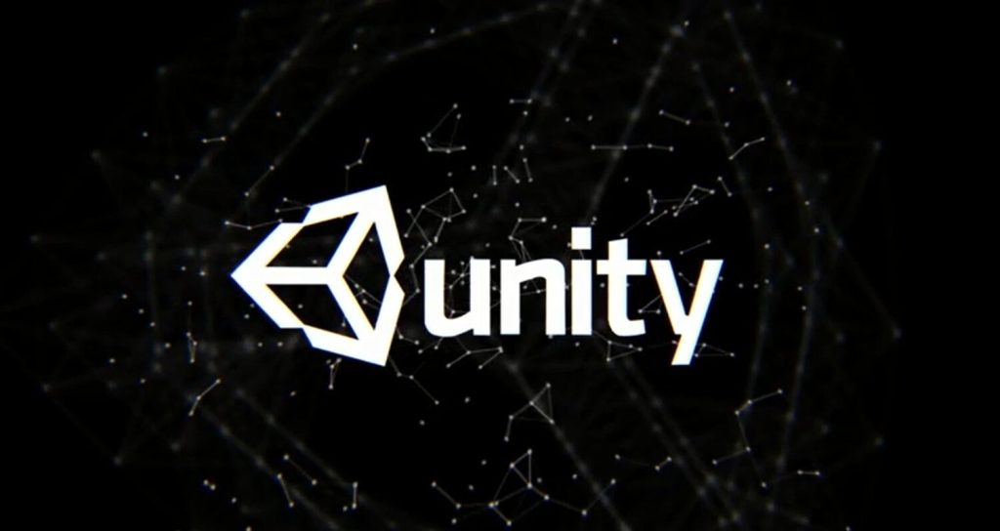
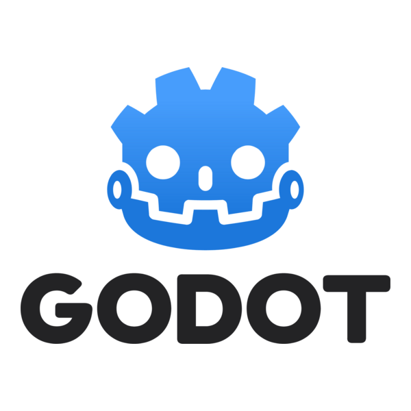

Video Tutorial: Introducción al Desarrollo de Videojuegos
- Pensar una idea mediante una lluvia de ideas o brainstorming
- Análisis de mercado para investigar la viabilidad del juego, buscando títulos similares, precios y público objetivo
- Investigar el género y la temática para analizar qué hace que los juegos populares sean divertidos y cómo mejorar
- Hacer la idea más específica detallando mecánicas, controles, niveles, progresión, historia, estética, duración y plataforma
- Establecer recursos y necesidades como el equipo, roles, presupuesto y el coste estimado en tiempo y dinero
Planificación
- Formar el equipo principal necesario para el prototipo
- Hacer una prueba de concepto (Proof of Concept) para demostrar que el juego es técnicamente posible
- Hacer la demo (Vertical Slice) que debe ser una porción reducida pero jugable, con todas las mecánicas finales
- Conseguir financiación si es necesario (con publishers o crowdfunding)
- Publicar un tráiler y la página de Steam para empezar a conseguir wishlists
- Publicar la demo para obtener feedback, ganar fans y medir la atracción del público
Preproducción
- Hacer un plan de producción (calendario de tareas) basado en el trabajo restante
- Crear una versión Alfa, que es jugable de principio a fin, aunque no tenga todo el contenido secundario
- Convertir el Alfa en una versión Beta, la cual está completa o casi completa, lista para ser testeada en busca de bugs
- Preparar el marketing de lanzamiento con un nuevo tráiler anunciando la fecha de salida
- Pulir la Beta hasta convertirla en la versión final
- Lanzar el juego
Producción
- Arreglar bugs y fallos que la comunidad encuentre
- Lanzar en otras plataformas (consolas) o traducirlo a nuevos idiomas
- Considerar contenido extra o DLC
Postproducción
Nota: El desarrollo de videojuegos es un proceso complejo que requiere planificación, creatividad y colaboración. Cada proyecto es único y puede requerir diferentes enfoques y técnicas.
Tutoriales de Motores de Juego
-

- Tutoriales de Unity - Plataforma oficial de aprendizaje de Unity con cursos para principiantes y avanzados.
- Tutoriales de Unreal Engine - Cursos oficiales de Unreal Engine que cubren desde lo básico hasta técnicas avanzadas. 
- Tutoriales de Godot - Recursos y tutoriales para aprender a usar el motor Godot.
- Tutoriales de Blender - Guías para aprender a crear modelos 3D y animaciones con Blender.
Documento de Diseño de Juego
El GDD es la biblia de tu proyecto. Es un documento vivo que detalla todos los aspectos del juego: la historia, las mecánicas, los personajes, los niveles y la monetización. Su objetivo es asegurar que todo el equipo (diseñadores, programadores, artistas) trabaje con una visión unificada.
- Qué incluye: Visión general, público objetivo, jugabilidad, arte conceptual, requisitos técnicos etc..
- Tip clave: Un GDD no debe estar terminado antes de empezar a programar; debe evolucionar a medida que se desarrolla el juego.
Prototipado Rápido y Prueba de Concepto
El prototipado es la creación de versiones sencillas y funcionales para probar rápidamente si una mecánica es divertida antes de invertir tiempo en arte o código complejo. La Prueba de Concepto se enfoca en demostrar que el aspecto más riesgoso o innovador del juego es técnicamente viable.
- Objetivo: Validar el core gameplay y mitigar riesgos técnicos.
- Tip clave: Usa assets temporales o placeholders para centrarte solo en la funcionalidad.
Malas Prácticas a Evitar
Aprender de los errores es valioso, pero evitarlos es aún mejor. Conocer las malas prácticas comunes en el desarrollo de videojuegos puede ahorrarte incontables horas y frustraciones.
- Feature Creep: Añadir demasiadas características sin control, haciendo que el proyecto sea inabarcable.
- No Prototipar: Saltar directamente a la producción sin validar las mecánicas principales.
- Ignorar el GDD: No tener una visión clara o no actualizar el documento de diseño.
- Falta de Control de Versiones: No usar herramientas como Git, arriesgándote a perder trabajo o generar conflictos.
- Poco Testing: Lanzar el juego sin una fase de pruebas exhaustiva en busca de bugs.
- Diseño por Comité: Intentar complacer a todos, resultando en un juego sin identidad clara.